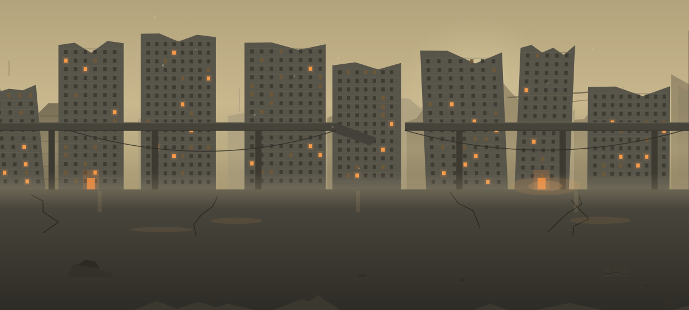
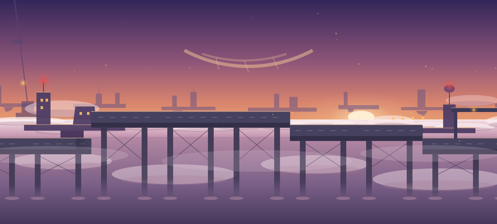
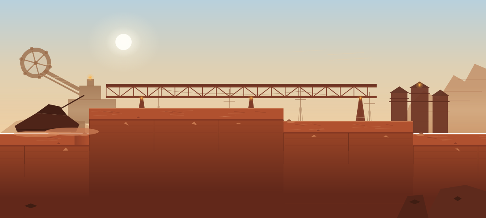
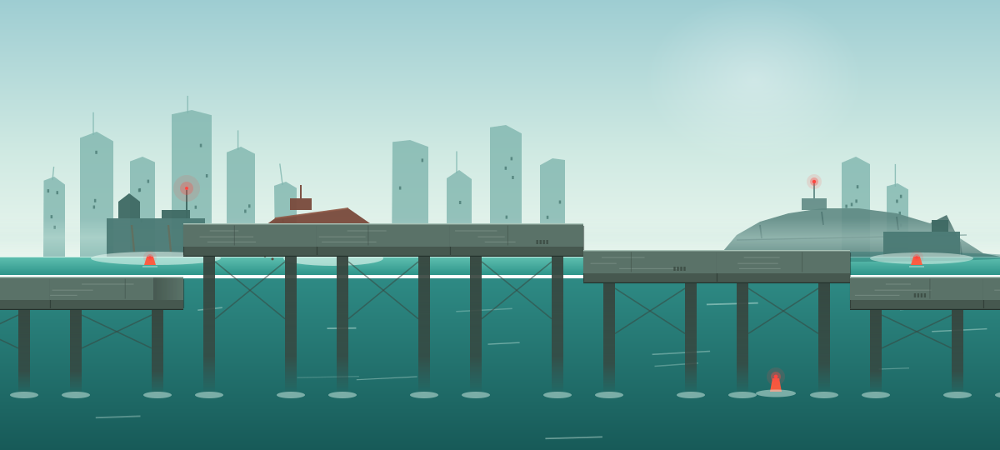

2d-ac 场景美术提案 · AC6 方向（手写矢量）
画布 1200×540 = 游戏视口 2400×1080 的一半（20:9）；地面线 y=330 ≈ 画面 61%，对齐游戏内落位。全部几何计算生成，无滤镜/文本，Godot ThorVG 兼容。纯场景，不含机甲。
方案一 · 锈雨废都
第一章废弃都市 vibe：酸雾锈色 + 钠灯橙点，断桥垂缆、层叠废墟天际线。

调色板：#c9b88e#57544a#3a382f#ffa04a#4d4a40
分层/视差：远景天际线 0.9 / 中景楼群 0.55 / 地表 0；钠灯橙是唯一的暖色，敌我弹道 readable
方案二 · 精炼所工业带
工厂/墙 vibe：钢青绿天光 + 红警灯 + 危险黄，桁架栈桥横穿画面。

调色板：#7f988e#38504a#2c403a#ff4640#d8a021
分层/视差：远景烟囱群 0.9 / 中景塔群栈桥 0.55 / 前景管排与地表 0；结构感最强，最'工业 AC'
方案三 · 雪原警戒点
第三章雪原 vibe：高调冰白 + 暗色剪影 + 一点信号红，半埋运输机残骸。

调色板：#f7fafb#c2d2db#4d5963#5a6a74#e23d3d
分层/视差：远岭雷达塔 0.9 / 中景残骸雪堆 0.55 / 雪盖公路 0；暗色机体在雪上辨识度最高
方案四 · 珊瑚辐合夜
后期 Coral vibe：靛蓝夜空 + 碎环巨构 + 地裂珊瑚辉光，最具 AC6 辨识度。

调色板：#090d22#182042#0d1330#ff5a33#ffb36b
分层/视差：碎环+塔群 0.9 / 雾带岩丘 0.55 / 发光地裂地表 0；暗场对弹道可读性是主要风险
方案五 · 破晓云廊
高空航线 vibe：曙光金霞 + 云海 + 细碎天环，浮空平台链与天梯缆线。

调色板：#33265a#8e5578#f4b071#fbeef0#4a4662
分层/视差：天环/浮岛链 0.9 / 中景平台+龙门架 0.55 / 桥面与云下深带 0；暖高调背景衬暗色机体，黄弹靠亮天承托（亮背景章规矩适用）
方案六 · 赤沙矿区
矿区荒漠 vibe：白热沙暴天光 + 赤红沙海，斗轮巨机与输送栈桥。

调色板：#b8d0dc#ded0b4#b0512f#62281a#ffb347
分层/视差：峡壁/巨机/电塔 0.9 / 栈桥矿仓 0.55 / 红沙地表 0；中性沙色对黄弹友好，沙暴带浓度是唯一风险
方案七 · 溺海都会
沿岸战场 vibe：高调青绿海光 + 沉没天际线，倾覆巨舰与海堤公路。

调色板：#9ecdd2#cfe9e2#5fc0b0#5a7268#ff5a3c
分层/视差：沉没楼群/巨舰 0.9 / 屋顶残舰 0.55 / 海堤+近海 0；高亮水面对深色机体与红眼最友好，反光带避开中央走弹区